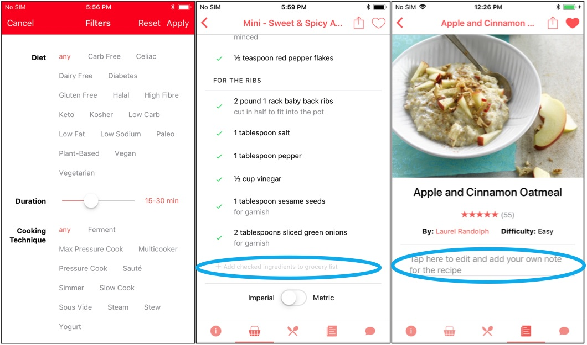

Redesign a Recipe App
Mobile App & Usability Testing
Introduction of the App
This recipe app was designed for helping end users find and follow recipes when using a specific cooking appliance. All the recipes were customized to the cooking appliance and could be remotely controlled by the app and voice via Google and Amazon IoT speakers as the future features. The goal of this redesign project was to find all usability issues, make changes thus get better prepared for further development of more features.
My Role
I was responsible for the entire redesign project including planning and executing proper evaluations, analyzing the results, compiling the reports and redesigning the UIs. I had an assistant to record the video and take notes in the usability testing.
The Process
The process was divided into 2 main parts, usability testing and UI improvements. To locate the current issues, a usability testing and a post-test interview were conducted. I recruited 10 participants from the local community who had different levels of experience of the appliance product and the app.Usability issues were found and addressed. In the UI improvements stage, some small user studies such as card sorting, wizard of Oz and A/B tests were conducted to validate the results of the usability testing and UI design directions.
Usability Testing
4 major modules of the app were testing that covered 9 scenarios and 24 tasks, and evaluated by several metrics such as success/error rates, task time, Jacob Nielsen’s 10 heuristics, system usability scale (SUS), Whitney Quesenbery’s 5Es, severity rankings, etc.
According to Nielsen’s heuristics, I found that the below aspects were rated in lower scores:
- User control and freedom
- Recognition rather than recall
- Help users recognize, diagnose, and recover from errors
From locating the issues based on each screen, there were 4 major objectives for the redesign:
- Simplify the information architecture
- Unify screen elements including colors, fonts and icons
- Refine the wording
- Simplify the interactions
- Make the workflow smoother and clearer
Here're a few examples.
1. Color Design for text labels
In the app, there were 3 different gray colours that all represented the minor information of texts and they were clickable. This inconsistency confused the users that the darker text might be clickable but the lighter text was unclickable.
Solution
These 3 different colors should be unified into one color. I chose the darker gray to distinguish from unclickable gray color.
2. Home Screen's Architecture and Wording
In the usability testing, all the participants found it was difficult to navigate on the home screen: the user guide section was split into 2 parts for reinforcing the branding value and was entitled with the company's name according to the needs of marketing; the different sections of recipes were not well identified and named, participants didn't understand the "featured recipe" and didn't show any interests on the "newest recipe".
Solution
Redesigned the layout of the home screen after a few iterations and A/B tests. See below.
3. Icon and Its Interactions
There were 3 different colors of checkmarks represented different meanings in the App. In the usability testing, all the participants were very confused when multiple items were selected, especilly after adding a few items to the "Grocery" list, 3 different colors of checkmarks were all displayed on the screen. Users were hesitated to select items. They could not undo the operations correctly and foresee the potencial errors.

Solution
To make the screen simpler and clearer, I removed all the gray checkmarks that reprents "not checked item". To distinguish the confusion of two different interactions "check" and "add to the grocery", I split them into 2 different places and icons. A shopping cart icon was added to represent the current numbers of the items on the grocery list.
See the comparion below.

Result
After a few iterations of the redesign, the SUS(system usability scale) score was greatly increased from 39.5% to 76%.